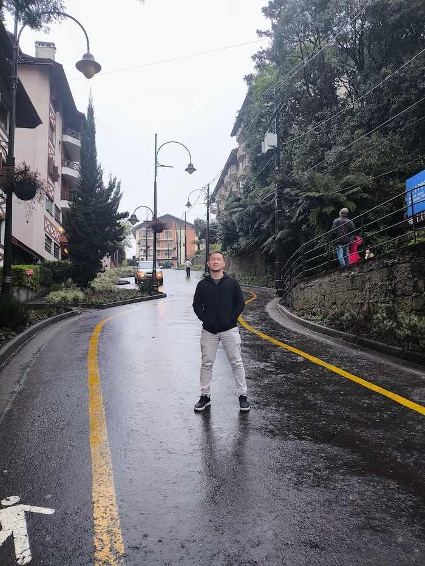

My favorite city is Gramado, in the south of Brazil. I love this city because it has a lot of beautiful places to visit, like parks, gardens, and museums. The architecture is also very charming, with many buildings inspired by European styles.
My favorite part of Gramado is the famous "rua torta" or in english "crooked Street". This street is very curious because is very straight, and has many curves. It is a popular tourist attraction and a great place to take photos.
this is a picture of me in the crooked street.